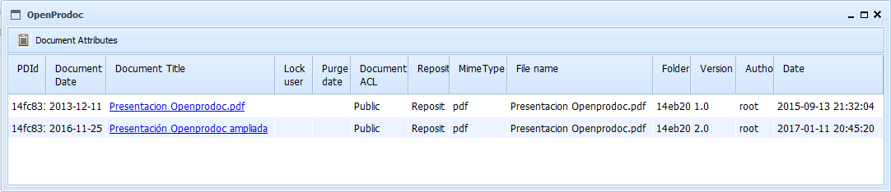

By selecting the option "List Versions", a list of versions of the currently selected document will be displayed.
Selectong a document and clicking on the "Document Attributes", you can see the attibutes of the document. Clicking on the title, you can see the file associated with that particular version.
The results table shows all the attributes of each version of the document.

This results table can be sorted by selecting the header of each column. You can also change the size of each column by dragging the separator line in the headers
See: CheckIn (Confirms changes in the locked document), CheckOut (Locks a Document for editing) and Cancel Checkout (Cancels changes in the document)